18 Customizing Graphs
18.1 Customizing Bars
In this example, we will discuss the various ways to change the appearance of bars in a bar chart or histogram.
The first step is to open the example file “Chocolate Eclairs.” From the Help tab on the ribbon, click the Example Documents button and then select “Chocolate Eclairs” from the menu. (When prompted about how to open the document, select Create a new project.) When the New Project wizard appears, leave the defaults and click Finish.
Once the project has finished loading, select Words Breakdown on the sidebar, then click Word Counts beneath that. A bar chart showing a breakdown of word categories will be displayed:
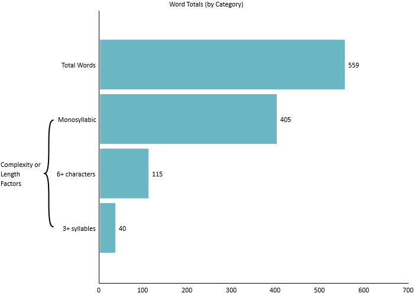
Now we will customize the appearance of this graph. One change that we can make is to reorder the columns in this bar chart. On the Home tab, click the Sort button under the Edit section. Select Sort Descending from the menu and note that the bars are now shown from largest to smallest from the origin:
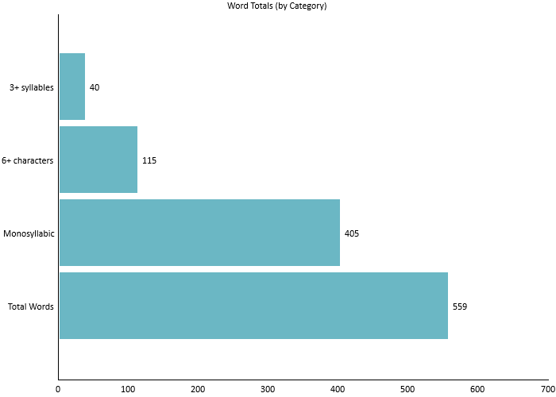
When changing the order of the bars, any axis brackets surrounding them will be removed.
Next, we can change the direction of the bars. Click the Orientation button in the Edit section. Select Vertical from the menu.
Now the bars will be arranged vertically:
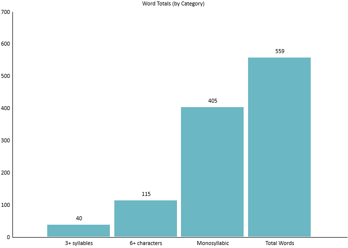
Finally, let’s change how the bars are drawn. Click the Bar Style button in the Edit section and select Thick Watercolor.
The bars will now have a watercolor paint effect, rather than the default solid look:
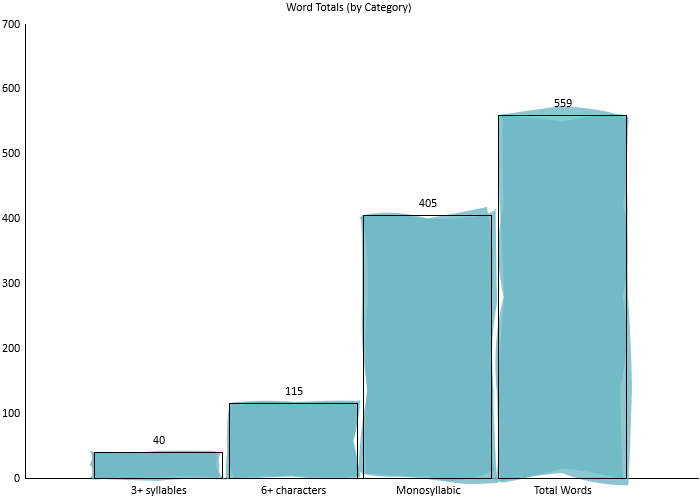
Images and shapes can also be used to draw our bars, as demonstrated in a later example.
Finally, let’s remove the labels to simplify the graph. Click the Labels button on the ribbon so that it is unpressed. Now the bars will be drawn without labels above them:
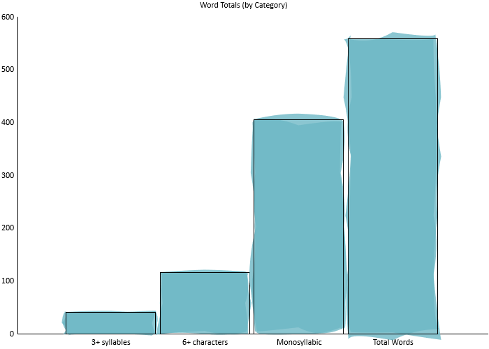
18.2 Customizing Backgrounds
Continuing from our previous example, let’s now change the background of the graph. On the Home tab, click. When the color selection dialog appears, select a new color (e.g., antique white) and click OK. After selecting a color, check the option Fade from the same menu.
Now, the graph will have an antique white background with a gradient effect:
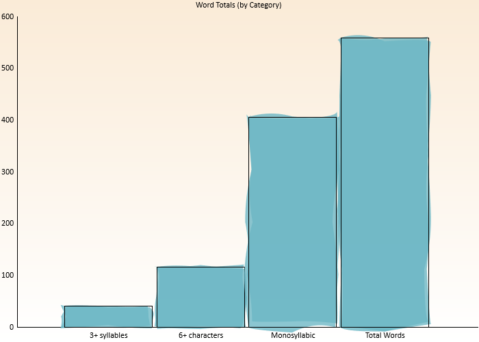
. When the image selection dialog appears, choose an image and click OK.
This image will now be shown as the background for your graphs:
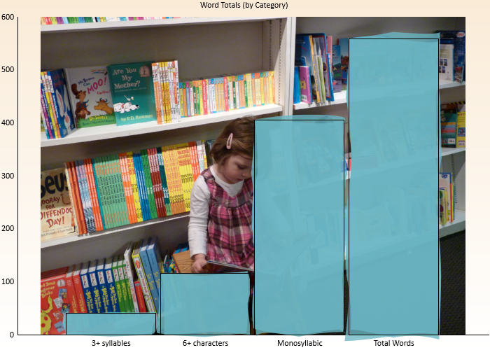
.
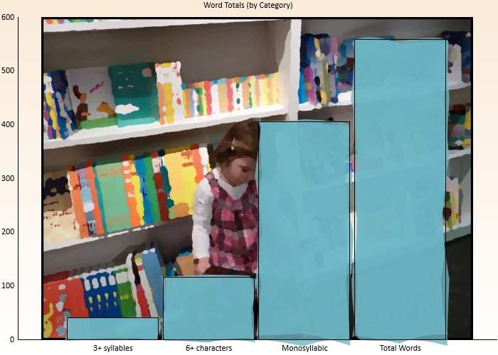
18.3 Adding Watermarks and Logos
Next, let’s put a watermark across our graph. On the Home tab, clickEnter the following into the Watermark dialog and click OK:
INTERNAL USE ONLY
Processed on @DATE@
Note how this label is now lightly written across the graph:
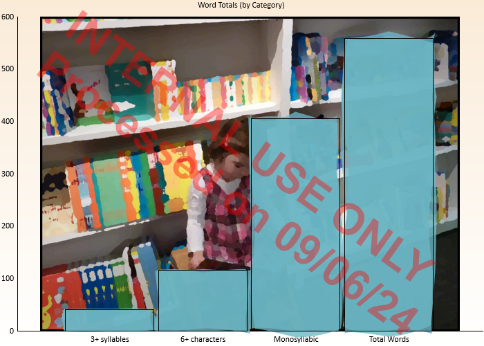
Entering @DATE@ in the watermark field will show the current date when the graph is rendered. Refer to Section 8.8 for other watermark options.
The watermark will be embedded in your project; this will ensure that it is portable when sharing with others.
Now let’s put a company logo on our graph. Click the Logo button in the Edit section. Select an image and click OK.
Now this image will be shown in the bottom right corner of the graph:
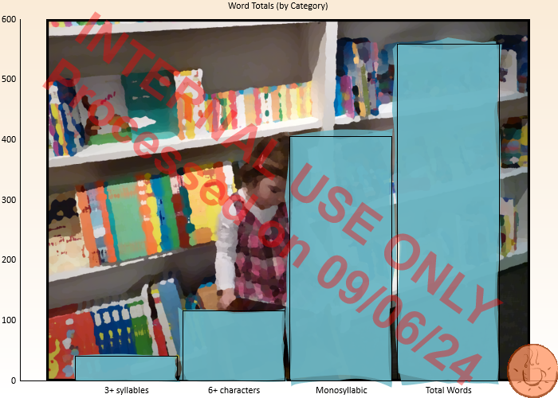
18.4 Using Stipples
In this example, we will use stipples for our bar charts. Basically, a stipple enables us to use stacked images or shapes to draw our bars. First, create or open any standard project and select Words Breakdown on the sidebar. Next, select the Word Counts subitem and note how the bars will be filled rectangles:
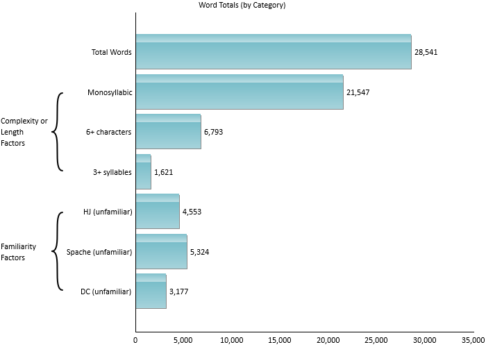
On the Home tab of the ribbon, click the Bar Style button and select Select stipple image… from the menu:
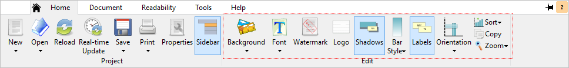
After selecting an image, the bars will be drawn as a repeating pattern of this image:
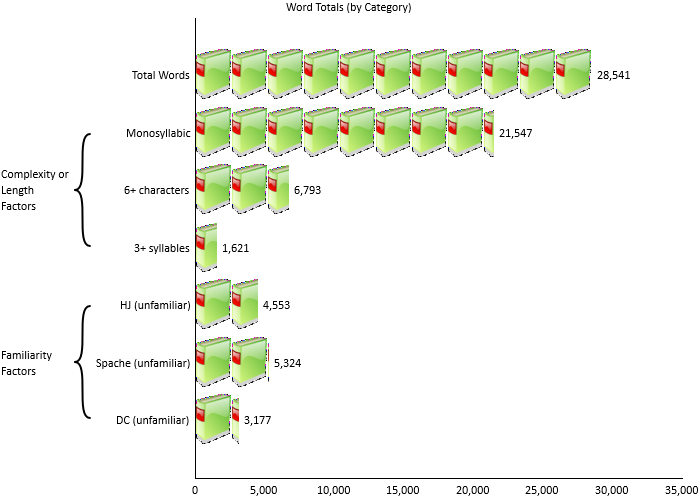
Enabling the Shadows option on the ribbon will draw a shadow under each image.
Note that images of any size can be used. If the image is larger than the bars’ width, then it will be scaled down to fit. Images that are smaller will remain their original size (rather than being upscaled) to preserve their quality.
Along with images, a set of predefined shapes are also available to choose from. To select one, click the Bar Style button again and select Select stipple shape… from the menu. Select a shape from the list (e.g., Car or Newspaper), and this shape will then be used for the bar pattern:
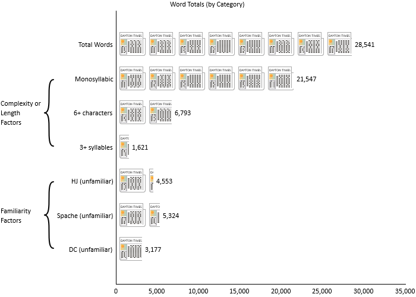
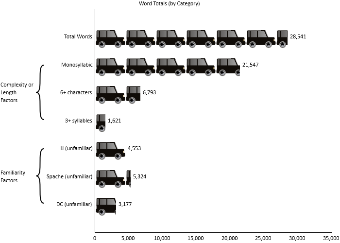
These features can also be applied to box plots and histograms. With any of these graph types selected, perform the same operation from the ribbon to draw with a stipple.
18.5 Selective Colorization
In this example, we will create a bar chart with a selective colorization effect. This technique is where the background is black & white and various focal points (i.e., the bars) are in color.
From the Help tab on the ribbon, click the Example Documents button and then select “Chocolate Eclairs” from the menu. (When prompted about how to open the document, select Create a new project.) When the New Project wizard appears, leave the defaults and click Finish.
Once the project has finished loading, select Words Breakdown on the sidebar, then click Word Counts beneath that. A bar chart showing a breakdown of word categories will be displayed. First, let’s remove the labels to simplify the graph. On the Home tab of the ribbon, click the Labels button so that is it unpressed.
Next, we will use an image to be displayed across all the bars. On the Home tab, click. When the image selection dialog appears, select an image and click OK. Now, the bars will be filled with the image:
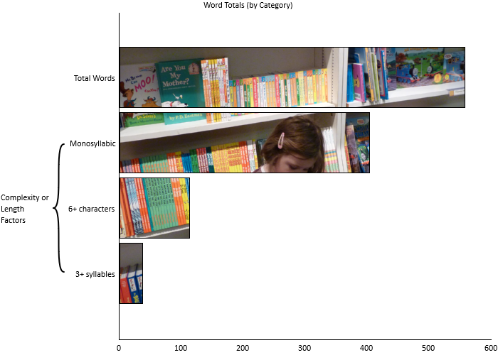
.
This image will now be shown as the background for the graph and bars:
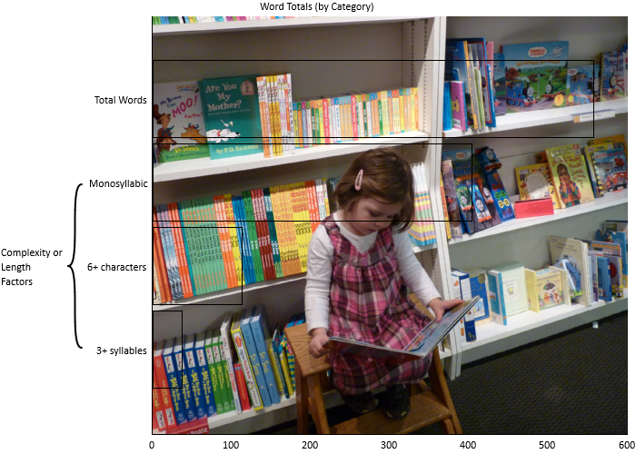
.
Now, we should see a selective colorization effect on our bar chart:
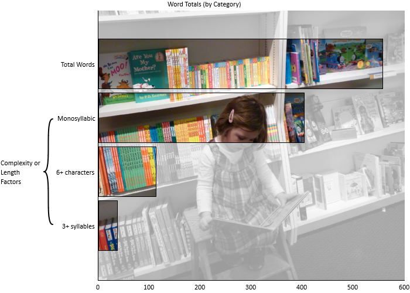
18.6 A Retro Appearance
In this example, we will create a basic-looking graph, with a more “retro” appearance. We will do this by removing all adornments and effects, and by applying washed-out colors and monospace fonts.
From the Help tab on the ribbon, click the Example Documents button and then select “Chocolate Eclairs” from the menu. (When prompted about how to open the document, select Create a new project.) When the New Project wizard appears, leave the defaults and click Finish.
Once the project has finished loading, select Words Breakdown on the sidebar, then click Word Counts beneath that. First, let’s remove the labels to simplify the graph. On the Home tab of the ribbon, click the Labels button so that is it unpressed.
Next, we will remove any visual effect from the bars. On the Home tab, click . Then, clickand select a light gray.
Next, click the Font button and select . When the font selection dialog appears, choose a monospace font (e.g., Consolas or Courier New) and click OK. Do the same for and. Doing this will give a typewriter look to the graph’s text.
Once we are done, our bar chart will have a simpler, “retro” look:
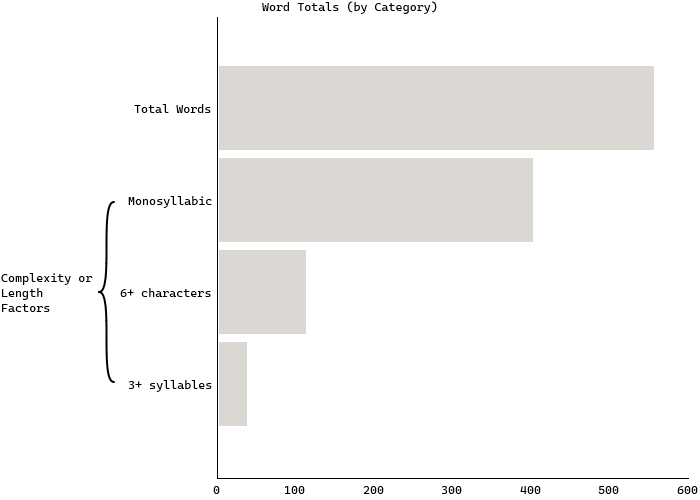
18.7 A Dark-mode Appearance
In this example, we will create a graph with a high-contrast, “dark mode” appearance.
From the Help tab on the ribbon, click the Example Documents button and then select “Chocolate Eclairs” from the menu. (When prompted about how to open the document, select Create a new project.) When the New Project wizard appears, leave the defaults and click Finish.
Once the project has finished loading, select the Readability tab on the ribbon. Clickto add a Raygor test to the project. Next, click Readability Scores on the sidebar, then click Raygor Estimate beneath that.
By default, graph backgrounds are white and most labels are black. If you change the background to black, then the program will automatically change the labels to white to provide contrast. To do this, select the Home tab on the ribbon and click. From the color picker, select pure black and click OK.
Now our graphs will have a dark, high-contrast appearance:
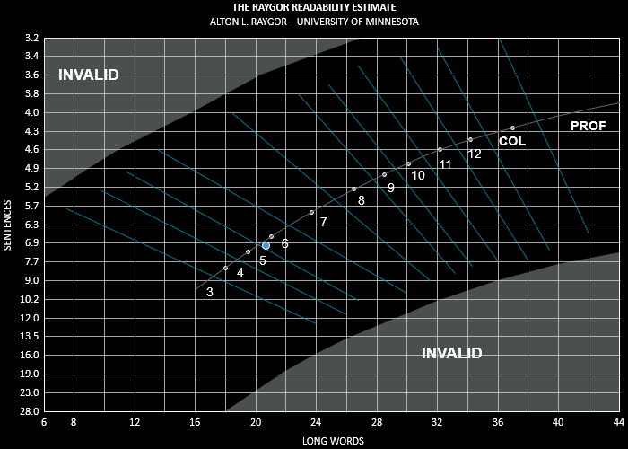
Printing with dark backgrounds is not recommended, as it will consume a lot of ink.